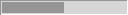
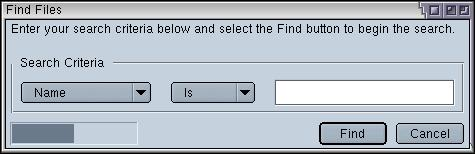

Progress Meters
In this section, we'll look at creating progress meters.
Adding a Progress Meter
A progress meter is a bar that indicates how much of a task has been completed. You typically see it when downloading files or when performing a lengthy operation. XUL has a progress meter element which can be used to create these. There are two types of progress meters: determinate and undeterminate.
Determinate progress meters are used when you know the length of time that an operation will take. The progress meter will fill up and, once full, the operation should be finished. This can be used for the download file dialog as the size of the file is known.
Undeterminate progress meters are used when you do not know the length of time of an operation. The progress meter will have an animation such as a spinning barber pole or a sliding box, depending on the platform and theme used.
Determinate progress meter:

Undeterminate progress meter:
The progress meter has the following syntax:
<progressmeter
id="identifier"
mode="determined"
value="0%"/>The attributes are as follows:
- idThe unique identifer of the progress meter
- modeThe type of the progress meter. If this is set to determined, the progress meter is a determinate progress meter where it fills up as the task completes. If this is set to undetermined, the progress meter is undeterminate where you do not know the length of time. The value determined is the default if you do not specify this attribute.
- valueThe current value of the progress meter. You should only use this for a progress meter that is determinate. The value should be set to a percentage from 0% to 100%. The value would be changed by a script as the task completes.
Let's add a progress meter to our find file dialog. We would normally put an undeterministic progress meter as we don't know how many files we'll be searching or how long the search will take. However, we'll add a normal one for now as an animating one can be distracting during development. The progress meter would normally only appear while the search is taking place. We'll add a script later to turn it on and off.
<hbox>
<progressmeter value="50%" style="margin: 4px;"/>
<spacer flex="1"/>
The value has been set to 50% so that we can see the meter on the window. A margin has been set to 4 pixels so that it is separated from the edge of the window. As was stated earlier, we only want the progress bar to be displayed while the search was occuring. A script will show and hide it as necessary.
(Next) In the next section, we will learn how to add additional elements to the window using HTML.